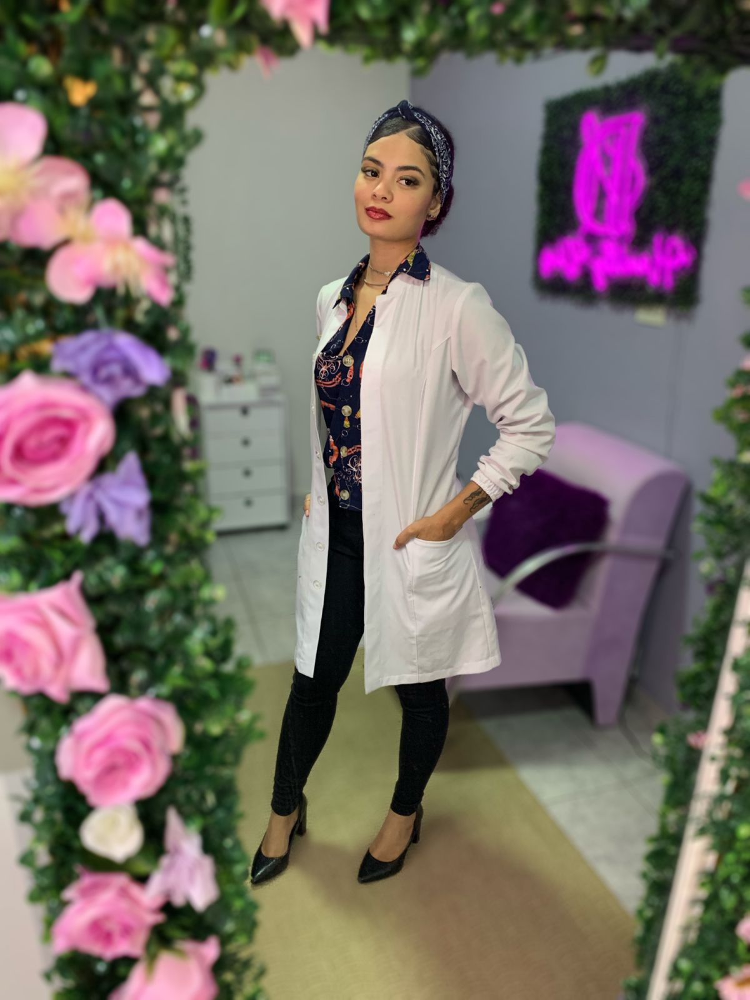
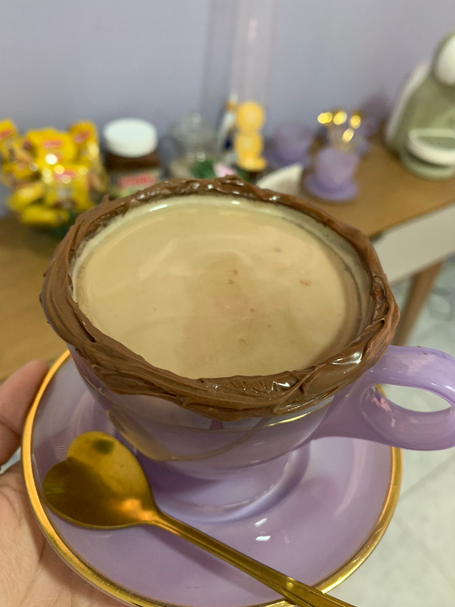

UM POUCO SOBRE MIM...
Meu nome é Hemilly Dias, tenho 22 anos e sou proprietária do Studio Hemilly Dias. Sempre fui muito vaidosa, e fascinada pelo mundo da beleza. Durante muitos anos me dediquei à maquiagem, mas em 2020 quando fui contratada para ser secretária em um salão de beleza, conheci as extensões de cílios, e tive a certeza de que essa seria a minha profissão. Comecei meus atendimentos em meio a pandemia, hoje, com 3 anos atuando como lash designer e designer de sobrancelhas, consegui realizar meu sonho de ter meu próprio studio, que foi inaugurado em agosto de 2022. Apesar de já ter experiência como lash design, estou sempre buscando por mais conhecimento, para estar sempre por dentro de novas tendencias e melhorias no meu trabalho! Isso me permite entregar beleza e qualidade em cada procedimento realizado..
SOBRE MEU CANTINHO DE TRABALHO...
Bem-vindo ao nosso estúdio de cílios localizado na Av. Dr. Hildeberto Albuquerque Ferreira, no coração do Centro de Nova Granada - SP! Nosso espaço foi cuidadosamente projetado para proporcionar uma experiência única e agradável a todos os nossos clientes.
Ao adentrar o nosso estúdio, você será recebido por um ambiente aconchegante e acolhedor. Criamos um espaço que combina elegância com calor, para que você se sinta instantaneamente à vontade.
A decoração do nosso estúdio reflete a sofisticação e a modernidade. Cada detalhe foi pensado para criar uma atmosfera que inspire confiança e relaxamento. Queremos que sua visita seja não apenas um compromisso de beleza, mas também um momento para cuidar de si mesmo.
Valorizamos cada cliente que entra em nosso estúdio e buscamos proporcionar um atendimento personalizado. Entendemos que cada pessoa é única, e adaptamos nossos serviços para atender às suas necessidades específicas, garantindo uma experiência totalmente personalizada.
SUA BELEZA MERECE UM CAFÉ TÃO ESPECIAL QUANTO VOCÊ
Em nosso estúdio, acreditamos que a beleza vai além do visual. É uma experiência completa, onde cada detalhe é cuidadosamente considerado. Sua beleza merece ser apreciada em todos os sentidos, inclusive pelo paladar. Por isso, convidamos você a desfrutar de um momento de relaxamento e cuidado conosco. Enquanto realçamos o seu encanto, saboreie nosso café especial, preparado para tornar sua visita única e memorável. Aqui, a busca pela beleza é uma jornada que envolve todos os sentidos. Venha se sentir especial e deliciar-se com o que há de melhor em nosso estúdio, onde o seu brilho é a nossa prioridade
